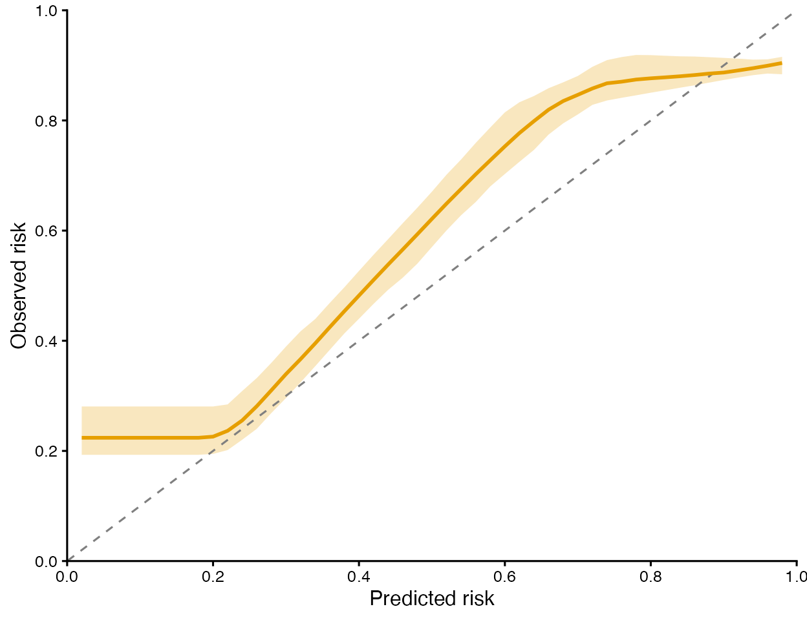
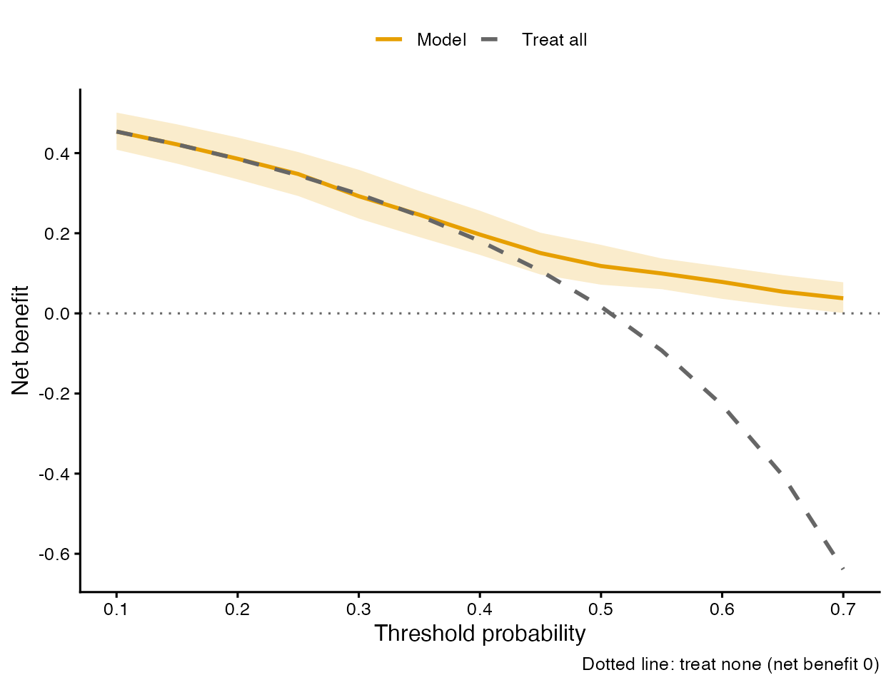

Worked example with the primary full-Bayes model
Rotterdam → GBSG, MCMC piecewise-exponential PH vs Cox-Laplace
Source:vignettes/worked_example_stan.Rmd
worked_example_stan.Rmdvignette("worked_example") runs the Rotterdam → GBSG
validation on the coxph-Laplace backend so it reproduces
with only the survival package. Because CRAN
rstanarm ships no stan_surv, this article
instead fits the package’s primary full-Bayes model - the
rstan piecewise-exponential PH model
(backend = "stan_pwexp") - on the same cohort pair and
compares the full-Bayes MCMC posterior to the Cox-Laplace approximation
and the plain frequentist estimate.
This article requires an rstan toolchain to build and is not run by pkgdown on every site rebuild; it is rendered once and checked in as a static page.
suppressMessages({library(survival); library(rstan); library(bayesval)})
rstan::rstan_options(auto_write = TRUE)
YEAR <- 365.25Data: harmonising the two cohorts
Same harmonisation as vignette("worked_example"):
recurrence-free survival as the Rotterdam endpoint, GBSG’s tumour size
categorised to match.
prep <- function(df, time, status) {
size_cat <- if (is.factor(df$size)) df$size else
cut(df$size, breaks = c(-Inf, 20, 50, Inf),
labels = c("<=20", "20-50", ">50"))
tibble::tibble(time = df[[time]] / YEAR, status = df[[status]],
age = df$age, nodes = df$nodes,
grade3 = as.integer(df$grade >= 3),
size = factor(size_cat, levels = c("<=20", "20-50", ">50")),
logpgr = log(df$pgr + 1), hormon = df$hormon, meno = df$meno)
}
rot <- dplyr::mutate(rotterdam,
rfs = as.integer(recur == 1 | death == 1),
rfstime = ifelse(recur == 1, rtime, dtime))
train <- prep(rot, "rfstime", "rfs") |> tidyr::drop_na()
test <- prep(gbsg, "rfstime", "status") |> tidyr::drop_na()
horizons <- c(2, 5); h5 <- 2L; tau <- 5
form <- Surv(time, status) ~ age + nodes + grade3 + size + logpgr + hormon + menoFull-Bayes fit (MCMC)
t0 <- Sys.time()
obj <- fit_stan_pwexp(form, train, horizons = horizons, n_pieces = 8L,
beta_scale = 2.5, chains = 4L, iter = 1000L, seed = 2026)
cat(sprintf("fitted in %.0f s\n", difftime(Sys.time(), t0, units = "secs")))## fitted in 3 s
obj## <stan_pwexp: 2000 draws, 8 pieces, 8 covariates>
## MCMC: max Rhat = 1.002, min ESS = 2095, divergences = 0The MCMC diagnostics gate (check_mcmc_gate(): Rhat <
1.01, adequate ESS, no divergences) must pass before any metric below is
trustworthy.
stopifnot(obj$diagnostics$max_rhat < 1.05)
cat(sprintf("max Rhat %.3f, min ESS %.0f, divergences %d\n",
obj$diagnostics$max_rhat, obj$diagnostics$min_ess,
obj$diagnostics$divergences))## max Rhat 1.002, min ESS 2095, divergences 0External validation posterior on GBSG
ps <- stan_pwexp_predict(obj, test, time = "time", status = "status")
ps## <psurv: stan_pwexp(external)>
## draws S = 2000, subjects n = 686, horizons H = 2
## horizons: 2, 5
## events: 299 (56.4% censored)Posterior validation suite
suite <- list(
harrell = metric_harrell_c,
uno = function(d, w) metric_uno_c(d, w, tau = tau),
gonen = metric_gonen_k,
slope = metric_cal_slope,
ici = function(d, w) metric_ici(d, w, horizon = h5, method = "auto"),
brier = function(d, w) metric_brier(d, w)[c(paste0("Brier_t", h5), "IBS")])
post <- propagate_many(ps, suite, weights = "bootstrap", seed = 1)
tab <- posterior_table(post) |>
dplyr::mutate(metric = sub("^[^.]+\\.", "", metric))
knitr::kable(dplyr::select(tab, metric, summary),
caption = "Full-Bayes (stan_pwexp) posterior median [95% CrI], GBSG @5y")| metric | summary |
|---|---|
| C_harrell | 0.660 [0.622, 0.692] |
| C_uno | 0.647 [0.610, 0.679] |
| K_gonen | 0.625 [0.613, 0.638] |
| cal_slope | 0.794 [0.566, 1.022] |
| ICI | 0.083 [0.055, 0.112] |
| E50 | 0.078 [0.048, 0.108] |
| E90 | 0.147 [0.103, 0.186] |
| Brier_t2 | 0.224 [0.204, 0.247] |
| IBS | 0.199 [0.184, 0.215] |
Full-Bayes vs Cox-Laplace vs frequentist
lp <- colMeans(ps$eta)
dfv <- tibble::tibble(time = test$time, status = test$status)
fw <- function(est, se) c(est, est - 1.96 * se, est + 1.96 * se)
ch <- concordance(Surv(time, status) ~ lp, data = dfv)
cu <- concordance(Surv(time, status) ~ lp, data = dfv, timewt = "n/G2", ymax = tau)
cs <- coxph(Surv(time, status) ~ lp, data = dfv)
freq <- tibble::tibble(
metric = c("C_harrell", "C_uno", "cal_slope"),
estimate = c(1 - ch$concordance, 1 - cu$concordance, coef(cs)[[1]]),
lower = c(fw(1 - ch$concordance, sqrt(ch$var))[2],
fw(1 - cu$concordance, sqrt(cu$var))[2],
fw(coef(cs)[[1]], sqrt(vcov(cs)[1, 1]))[2]),
upper = c(fw(1 - ch$concordance, sqrt(ch$var))[3],
fw(1 - cu$concordance, sqrt(cu$var))[3],
fw(coef(cs)[[1]], sqrt(vcov(cs)[1, 1]))[3]))
knitr::kable(posterior_vs_frequentist(tab, freq),
caption = "Full-Bayes median [95% CrI] vs frequentist estimate [95% CI]")| metric | bayesian | frequentist |
|---|---|---|
| C_harrell | 0.660 [0.622, 0.692] | 0.660 [0.628, 0.693] |
| C_uno | 0.647 [0.610, 0.679] | 0.648 [0.616, 0.680] |
| cal_slope | 0.794 [0.566, 1.022] | 0.769 [0.618, 0.920] |
The full-Bayes MCMC posterior reproduces the frequentist point
estimates and agrees closely with the Cox-Laplace approximation reported
in vignette("worked_example"), with credible intervals that
carry the genuine posterior - not its large-sample Laplace stand-in.
PPC and decision curve (full-Bayes)
GBSG calibration at 5 years under the full-Bayes piecewise-exponential model:
ppc <- ppc_calibration(ps, horizon = h5, method = "auto", draws = 200L, seed = 3)
plot_calibration_band(ppc)
The posterior predictive p-value is 0.01.
The GBSG decision curve at 5 years:
pnb <- posterior_net_benefit(ps, thresholds = seq(0.1, 0.7, 0.05), horizon = h5,
weights = "bootstrap", draws = 300L, seed = 4)
plot_net_benefit(pnb)
Both the calibration posterior predictive check and the decision-curve band agree with the Cox-Laplace analysis: the model is usefully discriminating but externally miscalibrated, and still decision-analytically useful across clinically relevant thresholds.